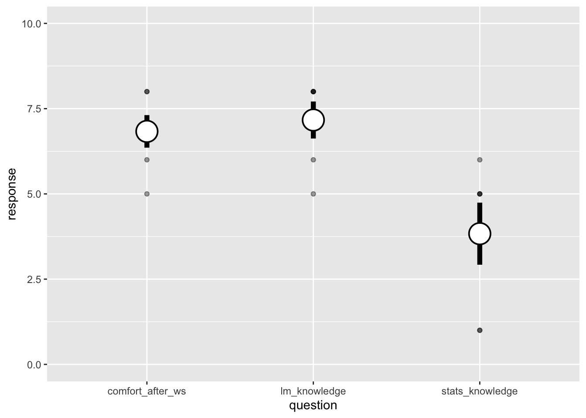

library("googlesheets4")
library("googledrive")
library("dplyr")
library("tidyr")
library("glue")
library("stringr")
library("ggplot2")
library("ggtext")
library("forcats")
library("readr")
library("kableExtra")
library("janitor")ds4ling workshop evaluation
Workshop dates: 11-29 to 12-2 (2022)
Location: University of Basque Country, Vitoria, Spain
Load libraries
Get google sheet and tidy
# give gargle permission
drive_auth(email = TRUE)
# Locate file, check ID
drive_find(n_max = 5, type = "spreadsheet")
# New sheet
all_data_temp <- read_sheet("1ZKpviz_MdpacIAIhDurS67pGuecckYTuCS_rEpdGJrs") %>%
clean_names()
# Download to doc folder
write_csv(all_data_temp, "scripts/ds4ling_ws_20221129.csv")eval_data <- read_csv("scripts/ds4ling_ws_20221129.csv") %>%
rename(
stats_knowledge = on_a_scale_from_1_to_10_please_rate_your_knowledge_of_statistics_before_taking_this_workshop,
lm_knowledge = after_taking_this_workshop_rate_your_understanding_of_the_linear_model,
comfort_after_ws = how_comfortable_do_you_feel_now_using_the_linear_model_in_your_own_research,
what_helpful = what_did_you_find_to_be_particularly_helpful,
what_more = what_would_like_to_have_seen_more_of,
add_feedback = please_provide_any_additional_feedback
) %>%
mutate(id = gsub("\\D", "", timestamp))
glimpse(eval_data)Rows: 6
Columns: 8
$ timestamp <dttm> 2022-12-02 13:37:39, 2022-12-02 13:40:59, 2022-12-02…
$ stats_knowledge <dbl> 6, 5, 1, 1, 5, 5
$ lm_knowledge <dbl> 8, 8, 5, 6, 8, 8
$ comfort_after_ws <dbl> 8, 7, 5, 6, 8, 7
$ what_helpful <chr> NA, "I really loved how you built things up and how y…
$ what_more <chr> "examples from linguistics instead of cars :)", "It w…
$ add_feedback <chr> "great workshop!", NA, "I just want to thank you baca…
$ id <chr> "20221202133739", "20221202134059", "20221202134141",…eval_data_num <- eval_data %>%
select(id, timestamp, stats_knowledge:comfort_after_ws) %>%
pivot_longer(cols = stats_knowledge:comfort_after_ws,
names_to = "question", values_to = "response")
eval_data_num %>%
ggplot() +
aes(x = question, y = response) +
geom_point(alpha = 0.4) +
stat_summary(fun.data = mean_se, geom = "pointrange",
size = 2, pch = 21, fill = "white") +
coord_cartesian(ylim = c(0, 10))